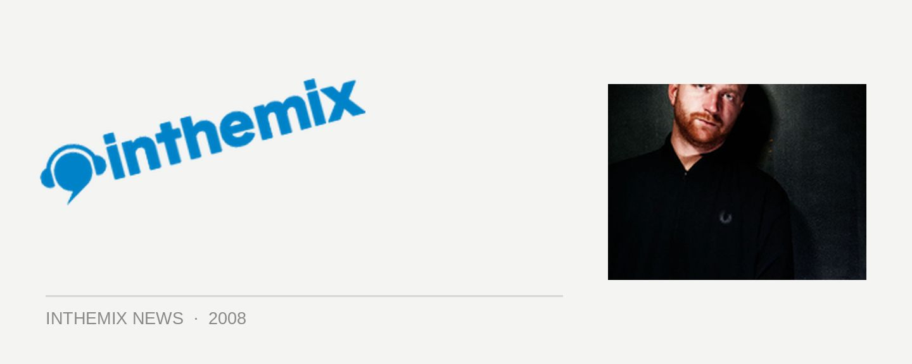

Switch joins Carl Craig for Chinese Laundry NYE
And Willy Wonka himself might even be making an appearance… We already knew that Detroit techno legend Carl Craig would be making an appearance at one of Sydney’s favourite underground venues on New Years Eve. ITM can now confirm that he’ll be joined by another mighty international headliner in the form of Switch. The UK fidget house maestro has had his hands all over the work of massive names like M.I.A, Santogold and Missy Elliot in recent years, and he’s classed as one of the most influential producers working in dance music today.
Headliner #3 is our own Kid Kenobi, who’s been rocking the Laundry floors as a Club Club resident since the beginning of the year and on New Year’s Eve, he’ll be playing exclusively at Sydney’s biggest smallest club. But that’s not all, cause the Kid will be joined by his compatriots *MDX AKA Mark Dynamix and Reno, Matttt, Club Junque, Chris Fraser, Matt Nugent, Ben Henderson, The Hump Day Project, The Gameboys, Hugga Thugg, The Vandals and more friendly faces that will be familiar to all the Laundry regulars.
‘Willy Wonka’ will be the theme for the evening, and there’ll be massive tunes pumping out of all four rooms of Chinese Laundry, including The Garden. If it’s anywhere near as massive as the two previous years at Chinese Laundry, it’ll be a New Years Eve to remember.
Tickets on sale at ITM Monday 20th October. A ‘Gold Ticket’ will set you back $85+BF and includes free alcohol from 9-10pm. A ‘Silver Ticket’ is $75+BF with 1 hour half price drinks and a ‘Bronze Ticket’ is $65+BF for general entry.